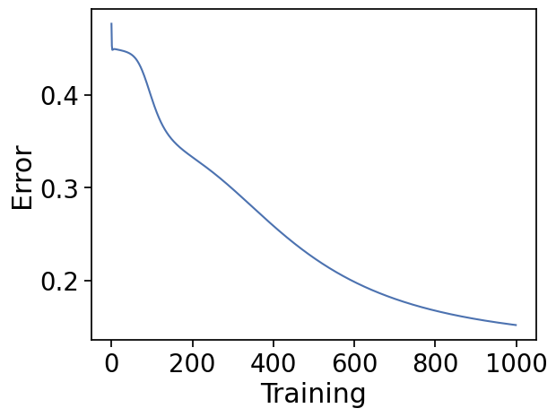
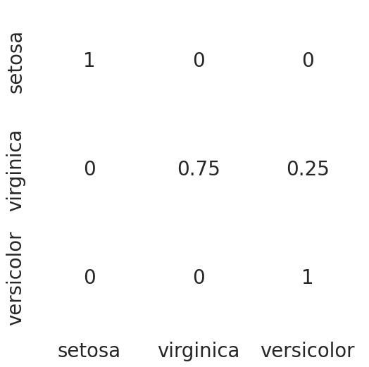

## Upload data from Module 3 data folder:
# data1.csv
# Note, make sure not to upload the data1.csv from Module 2Importing Libraries and Data
Cell 1 Importing libraries
::: {#cell-4 .cell _cell_guid=‘0bb3fe27-8f88-5516-eefc-649a61ce62ae’ _uuid=‘e9b103b270aa7e62add41bce5fc79b1ed7f2d3a0’ cellView=‘code’ execution_count=89}
import numpy as np
import pandas as pd
import seaborn as sns
import matplotlib.pyplot as plt
%matplotlib inline:::
Cell 2 Reading the data
::: {#cell-6 .cell _cell_guid=‘504c384b-1248-0bfa-92d8-0909a505438f’ _uuid=‘8af2462230f4b596a462822bcfaec54ca5e0f362’ executionInfo=‘{“elapsed”:13,“status”:“ok”,“timestamp”:1621967870877,“user”:{“displayName”:“Leif Wilm”,“photoUrl”:““,”userId”:“04857518338297398200”},“user_tz”:360}’ outputId=‘acf66200-dbe9-4d59-bc67-29abcec34fd0’ execution_count=90}
#read data from csv
iris = pd.read_csv("data/IrisData1.csv")
selected_rows = [0, 1, 50, 51, 100, 101]
print(iris.iloc[selected_rows]) Sepal_Length Sepal_Width Petal_Length Petal_Width Species
0 5.1 3.5 1.4 0.2 Iris-setosa
1 4.9 3.0 1.4 0.2 Iris-setosa
50 7.0 3.2 4.7 1.4 Iris-versicolor
51 6.4 3.2 4.5 1.5 Iris-versicolor
100 6.3 3.3 6.0 2.5 Iris-virginica
101 5.8 2.7 5.1 1.9 Iris-virginica:::
Cell 3 Dataset verification
#Check the dataset to make sure no data is missing and Check the class labels
def verify_dataset(data):
#if any of the rows have missing value return datas missing
data_found = 1
for each_column in data.columns:
if data[each_column].isnull().any():
print("Data missing in Column " + each_column)
#if any rows are not missing return Dataset is complete. No missing value
quit()
if data_found == 1:
print("Dataset is complete. No missing values")
return
verify_dataset(iris)Dataset is complete. No missing valuesCell 4 One hot encoding function
::: {#cell-10 .cell _cell_guid=‘ec0bfe6e-c47c-f12f-0a1f-6a461105cf70’ _uuid=‘e624be71b3eb8591ff21ebdb807655ba03a2cabe’ execution_count=92}
#This function accepts an array of categorical variables and returns the one hot encoding
def to_one_hot(Y):
n_col = np.amax(Y) + 1
binarized = np.zeros((len(Y), n_col))
for i in range(len(Y)):
binarized[i, Y[i]] = 1.
return binarized:::
Cell 5 Data normalization function
#Normalize array
def normalize(X, axis=-1, order=2):
l2 = np.atleast_1d(np.linalg.norm(X, order, axis))
l2[l2 == 0] = 1
return X / np.expand_dims(l2, axis)Cell 6 Activation function definitions
#sigmoid and its derivative
def sigmoid(x):
return 1/(1+np.exp(-x))
def sigmoid_deriv(x):
return sigmoid(x)*(1 - sigmoid(x))
def user_softmax(A):
expA = np.exp(A)
return expA / expA.sum(axis=1, keepdims=True)Cell 7 Selecting features from a list
'''Change the values below'''
sepal_length = True
sepal_width = True
petal_length = True
petal_width = True
'''Change the values above'''
feature_list = [sepal_length,sepal_width,petal_length,petal_width]Cell 8 Selecting features and running the normalization function
#Specifying the input data "x"
columns = ['Sepal_Length', 'Sepal_Width', 'Petal_Length', 'Petal_Width']
x = pd.DataFrame(iris, columns=columns)
x = x.to_numpy()
x = x[:,feature_list]
print(iris.iloc[selected_rows]) Sepal_Length Sepal_Width Petal_Length Petal_Width Species
0 5.1 3.5 1.4 0.2 Iris-setosa
1 4.9 3.0 1.4 0.2 Iris-setosa
50 7.0 3.2 4.7 1.4 Iris-versicolor
51 6.4 3.2 4.5 1.5 Iris-versicolor
100 6.3 3.3 6.0 2.5 Iris-virginica
101 5.8 2.7 5.1 1.9 Iris-virginica
x = normalize(x)
print(x[selected_rows])[[0.80377277 0.55160877 0.22064351 0.0315205 ]
[0.82813287 0.50702013 0.23660939 0.03380134]
[0.76701103 0.35063361 0.51499312 0.15340221]
[0.74549757 0.37274878 0.52417798 0.17472599]
[0.65387747 0.34250725 0.62274045 0.25947519]
[0.69052512 0.32145135 0.60718588 0.22620651]]Cell 9 Labelling output data and applying one hot encoding
::: {#cell-21 .cell _cell_guid=‘635a6d0f-b62b-a978-21c2-445f994e0458’ _uuid=‘5f737ba55d570d5effe9fbb0f3a1267c4f44fd0a’ execution_count=98}
#Replace the species with 1,2 or 3 as appropriate
label_dict = dict()
label_dict['0'] = 'setosa'
label_dict['1'] = 'virginica'
label_dict['2'] = 'versicolor'
iris['Species'].replace(['Iris-setosa', 'Iris-virginica', 'Iris-versicolor'], [0, 1, 2], inplace=True)
#Get Output, flatten and encode to one-hot
columns = ['Species']
y = pd.DataFrame(iris, columns=columns)
y = y.to_numpy()
y = y.flatten()
y = to_one_hot(y)C:\Users\Usuario\AppData\Local\Temp\ipykernel_12644\2979211144.py:6: FutureWarning: A value is trying to be set on a copy of a DataFrame or Series through chained assignment using an inplace method.
The behavior will change in pandas 3.0. This inplace method will never work because the intermediate object on which we are setting values always behaves as a copy.
For example, when doing 'df[col].method(value, inplace=True)', try using 'df.method({col: value}, inplace=True)' or df[col] = df[col].method(value) instead, to perform the operation inplace on the original object.
iris['Species'].replace(['Iris-setosa', 'Iris-virginica', 'Iris-versicolor'], [0, 1, 2], inplace=True)
C:\Users\Usuario\AppData\Local\Temp\ipykernel_12644\2979211144.py:6: FutureWarning: Downcasting behavior in `replace` is deprecated and will be removed in a future version. To retain the old behavior, explicitly call `result.infer_objects(copy=False)`. To opt-in to the future behavior, set `pd.set_option('future.no_silent_downcasting', True)`
iris['Species'].replace(['Iris-setosa', 'Iris-virginica', 'Iris-versicolor'], [0, 1, 2], inplace=True):::
Cell 10 Train test splitting
x_y = pd.DataFrame(np.concatenate((x,y), axis=1))
def split_dataset_test_train(data,train_size):
data = data.sample(frac=1).reset_index(drop=True)
training_data = data.iloc[:int(train_size * len(data))].reset_index(drop=True)
testing_data = data.iloc[int(train_size * len(data)):].reset_index(drop=True)
return [training_data, testing_data]
np.random.seed(123456)
train_test_data = split_dataset_test_train(x_y,0.7)
X_train = train_test_data[0].iloc[:,0:4].to_numpy()
X_test = train_test_data[1].iloc[:,0:4].to_numpy()
y_train = train_test_data[0].iloc[:,-3:].to_numpy()
y_test = train_test_data[1].iloc[:,-3:].to_numpy()
print(X_train[selected_rows])
print(y_train[selected_rows])[[0.77381111 0.59732787 0.2036345 0.05430253]
[0.69594002 0.30447376 0.60894751 0.22835532]
[0.71366557 0.28351098 0.61590317 0.17597233]
[0.71576546 0.30196356 0.59274328 0.21249287]
[0.76467269 0.31486523 0.53976896 0.15743261]
[0.70779525 0.31850786 0.60162596 0.1887454 ]]
[[1. 0. 0.]
[0. 1. 0.]
[0. 1. 0.]
[0. 1. 0.]
[0. 0. 1.]
[0. 0. 1.]]Cell 11 Training function definition
def initialize_network(input_size, hidden_size, output_size):
w0 = 2*np.random.random((input_size, hidden_size)) - 1
w1 = 2*np.random.random((hidden_size, output_size)) - 1
bh = np.random.randn(hidden_size)
bo = np.random.randn(output_size)
return [w0, bh, w1, bo]
#sigmoid and its derivative
def sigmoid(x):
return 1/(1+np.exp(-x))
def sigmoid_deriv(x):
return sigmoid(x)*(1 - sigmoid(x))
def user_softmax(A):
expA = np.exp(A)
return expA / expA.sum(axis=1, keepdims=True)
def training(lr, batch_size, epochs, params):
w0, bh, w1, bo = params
rem = len(X_train) % batch_size
num_batch = len(X_train)//batch_size
if rem != 0:
num_batch += 1
#Errors - for graph later
errors = []
for epoch in range(epochs):
for curr_batch in range(num_batch):
# Finding the current batch
batch_start = curr_batch * batch_size
batch_end = batch_start + batch_size
input_batch = X_train[batch_start:batch_end]
# First layer propagation
zh = np.dot(input_batch, w0) + bh
layer1 = sigmoid(zh)
# Second layer propagation
zo = np.dot(layer1, w1) + bo
layer2 = user_softmax(zo)
########## Back Propagation
########## Phase 1
labels_batch = y_train[batch_start:batch_end]
layer2_error = layer2 - labels_batch
layer2w_delta = np.dot(layer1.T, layer2_error)
layer2b_delta = layer2_error
########## Phases 2
dcost_dah = np.dot(layer2_error , w1.T)
dah_dzh = sigmoid_deriv(zh)
layer1_error = dah_dzh * dcost_dah
layer1w_delta = np.dot(input_batch.T, layer1_error)
layer1b_delta = layer1_error
# Update Weights ================
w0 -= lr * layer1w_delta
bh -= lr * layer1b_delta.sum(axis=0)
w1 -= lr * layer2w_delta
bo -= lr * layer2b_delta.sum(axis=0)
error = np.mean(np.abs(layer2_error))
errors.append(error)
return [w0,bh,w1,bo], error, errorsCell 12 Evaluation function definition
def evaluation(params,tst_set):
w0 = params[0]
bh = params[1]
w1 = params[2]
bo = params[3]
# First layer propagation
zh = np.dot(tst_set, w0) + bh
layer1 = sigmoid(zh)
# Second layer propagation
zo = np.dot(layer1, w1) + bo
layer2 = user_softmax(zo)
return layer2Exercise 1
Cell 13 Selecting parameters and running the training function
input_size= X_train.shape[1]
hidden_size = 5
output_size=3
np.random.seed(654321)
params = initialize_network(input_size, hidden_size, output_size)
params_rounded = [np.round(param, 3) for param in params]
params_rounded[array([[-0.536, 0.465, 0.926, 0.386, 0.719],
[ 0.677, -0.843, -0.857, -0.935, 0.937],
[ 0.371, -0.867, -0.663, -0.399, -0.094],
[-0.279, -0.578, 0.076, -0.16 , 0.017]]),
array([-0.808, -0.437, 2.342, -1.639, -2.43 ]),
array([[ 0.558, 0.447, 0.572],
[ 0.749, 0.66 , -0.395],
[ 0.6 , -0.924, -0.553],
[ 0.255, 0.354, 0.934],
[-0.671, 0.216, 0.079]]),
array([ 1.105, -0.175, 1.103])]'''You may Change these values'''
learning_rate = 0.01
batch_size = 10
epochs = 1000
trained_params, error, errors = training(learning_rate, batch_size, epochs, params)Cell 14 Displaying the errors from training
#Plot the accuracy chart
accuracy = (1 - error) * 100
plt.plot(errors)
plt.xlabel('Training')
plt.ylabel('Error')
plt.show()
print("Training Accuracy " + str(round(accuracy,2)) + "%")
Training Accuracy 84.82%Cell 15 Running the evaluation function
y_pred = evaluation(trained_params,X_test)Cell 16 Displaying the confusion matrix
y_actual = pd.Series(y_test.argmax(axis=1))
y_pred = pd.Series(y_pred.argmax(axis=1))
cm = pd.crosstab(y_actual,y_pred).to_numpy()
cmarray([[14, 0, 0],
[ 0, 12, 4],
[ 0, 0, 15]], dtype=int64)
if cm.shape[1]<3:
cm = np.concatenate((cm,np.zeros((3,3-cm.shape[1]))),axis=1)
cm_norm = np.array([cm[i][j]/cm[i].sum() for i in range(cm.shape[0]) for j in range(cm.shape[1])])
cm_norm = cm_norm.reshape(3,3)
import seaborn as sns
from matplotlib.colors import ListedColormap
df_cm = pd.DataFrame(cm_norm, index = ['setosa','virginica','versicolor'],
columns = ['setosa','virginica','versicolor'])
plt.figure(figsize = (6,6))
with sns.axes_style('white'):
sns.heatmap(df_cm,
cbar=False,
square=False,
annot=True,
annot_kws={"size": 20},
cmap=ListedColormap(['white']),
linewidths=0.5)
sns.set(font_scale=1.8)
Exercise 2
Cell 17 Function for testing flower dimensions
def input_test_seq():
sepal_length = float(input('Enter the Sepal length in cm :'))
while True:
if float(sepal_length)< 0 or float(sepal_length) > 10:
print('Inalid Entry. Enter Sepal Length <10 \n')
sepal_length = float(input('Enter the sepal length in cm :'))
continue
else:
break
sepal_width = float(input('Enter the Sepal width in cm :'))
while True:
if float(sepal_width) < 0 or float(sepal_width) > 10:
print('Invalid entry')
sepal_width = float(input('Enter the sepal width in cm :'))
continue
else:
break
petal_length = float(input('Enter the petal length in cm :'))
while True:
if float(petal_length) <0 or float(petal_length) > 10:
print('Inalid Entry. Please enter value less than 10')
petal_length = float(input('Enter the petal length in cm :'))
continue
else:
break
petal_width = float(input('Enter the petal width in cm :'))
while True:
if float(petal_width) < 0 or float(petal_width) > 10:
print('Invalid entry')
petal_width = float(input('Enter the petal width in cm :'))
continue
else:
break
predict_features = [sepal_length,sepal_width,petal_length,petal_width]
predict_features = normalize(predict_features)
result_category = evaluation(trained_params,predict_features)
result_category = result_category.argmax(axis=1)[0]
if result_category == 0:
value_prediction = "Iris-setosa"
elif result_category == 1:
value_prediction = "Iris-versicolor"
elif result_category == 2:
value_prediction = "Iris-virginica"
return value_prediction
flower_prediction = input_test_seq()
print("The flower is most likely", flower_prediction)Enter the Sepal length in cm :5.1
Enter the Sepal width in cm :3.4
Enter the petal length in cm :1.4
Enter the petal width in cm :0.2
The flower is most likely Iris-setosa